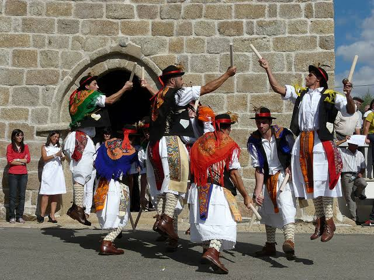

Agenda viva
Ritmos do
calendário mirandês.
Ao longo do ano, Miranda do Douro ganha vida com festas, romarias, feiras e eventos que celebram a cultura,
a gastronomia e as tradições locais. Fique a conhecer alguns dos principais acontecimentos e descubra a
melhor altura para visitar a região.

Junho a outubro
“Bamos a Miranda ber ls Pauliteiros”
Atuações dos Pauliteiros pelas ruas da cidade, todos os sábados a partir das 16h, entre 1
de junho e 31 de outubro.
Local: Centro Histórico
Fevereiro
Festival de Sabores Mirandeses
Festival dedicado à promoção dos sabores tradicionais, do artesanato e das raças autóctones de Miranda do
Douro. O programa inclui expositores, provas gastronómicas, música, animação tradicional e atuações dos
Pauliteiros de Miranda, dando a conhecer o melhor da cultura, da gastronomia e da identidade local.
Local: Jardim dos Frades Trinos
Páscoa · Março/Abril
Feira da Bola Doce e dos Produtos da Terra
Feira dedicada à valorização da tradicional Bola Doce Mirandesa e dos produtos locais, reunindo
produtores, artesãos e visitantes num ambiente de convívio e celebração. O programa inclui venda e
degustação de produtos regionais, animação musical, atuações dos Pauliteiros de Miranda e diversas
atividades que promovem a gastronomia e as tradições locais.
Local:
Jardim dos Frades Trinos
Junho
Ronda das Adegas
Evento que transforma as antigas adegas e casas tradicionais de Atenor num percurso repleto de
gastronomia, música e animação. Ao longo de três dias, os visitantes percorrem a aldeia de adega em adega,
degustando petiscos, vinhos e outras bebidas tradicionais, enquanto assistem a atuações de músicos,
gaiteiros, teatro, jogos tradicionais e outras atividades que celebram a cultura e as tradições locais.
Local: Aldeia de Atenor
Julho · Semana do 10 de julho
Semana da Cultura Mirandesa
Semana dedicada à valorização da cultura mirandesa, com um programa diversificado que inclui concertos,
exposições, gastronomia, artesanato, animação tradicional, atuações dos Pauliteiros de Miranda e a
emblemática Festa dos Pendões, um dos momentos mais marcantes das celebrações.
Local:
Centro Histórico
Agosto
FAMIDOURO | Feira de Artesanato e Multiatividades
Um dos principais eventos de verão da região, dedicado à promoção do artesanato, dos produtos regionais e
do comércio local. O programa integra concertos, espetáculos, animação, atuações dos Pauliteiros de
Miranda, showcookings e diversas atividades para toda a família.
Local:
Jardim dos Frades Trinos
Penúltimo fim de semana de Agosto
Festas de Santa Bárbara
As Festas da Cidade e em Honra de Santa Bárbara constituem um dos momentos altos do verão em Miranda do
Douro. O programa combina celebrações religiosas com animação de rua,
atuações dos Pauliteiros de Miranda e concertos de artistas de renome nacional, atraindo milhares
de visitantes à cidade.
Local: Centro Histórico
6 a 8 de setembro
Feira e romaria de Nossa Senhora do Naso
Uma das mais antigas e importantes romarias da região, que reúne milhares de peregrinos e visitantes em
torno da devoção a Nossa Senhora do Naso. Em simultâneo, realiza-se a tradicional Feira Franca do Naso,
com expositores, gastronomia, animação e iniciativas ligadas ao Burro de Miranda.
Local: Santuário de Nossa Senhora do Naso | Póvoa
Último fim de semana de Dezembro
Festival GEADA
Festival que celebra a cultura mirandesa e as tradições do solstício de inverno, combinando música
tradicional, concertos, animação de rua e experiências culturais. O programa inclui a emblemática Buolta a
las Adegas, atuações de gaiteiros e diversas iniciativas que dão a conhecer as tradições e a identidade da
região.
Local: Centro Histórico
Festas das aldeias
Janeiro
Cicouro
| Festa em Honra de Santo António
Paradela · Palaçoulo · Ifanes | Festa em Honra de São Sebastião
Fevereiro
Cércio
| Festa em Honra de São Brás
Águas Vivas
| Festa em Honra de Nossa Senhora das Candeias
Abril
Constantim
| Romaria Internacional em Honra de Nossa Senhora da Luz
Maio
Aldeia Nova
| Festa em Honra de São João das Arribas
Duas Igrejas
| Festa em Honra de Santa Bárbara
Fonte de Aldeia
| Festa da Santíssima Trindade
São Martinho
| Festa em Honra do Divino Senhor da Piedade
São Martinho
| Festa em Honra de Nossa Senhora de Fátima e da Mocidade de São Martinho
Julho
Cércio
| Festas em Honra de Santa Marinha
Vale de Mira
| Festa em Honra de Santa Ana e Nossa Senhora das Dores
Agosto
Águas Vivas
| Festa em Honra de São Roque
Cércio · Malhadas · Palaçoulo · São Pedro da Silva · Sendim · Vila Chã da Braciosa
| Festa em Honra de
Santa Bárbara
Duas Igrejas
| Festa em Honra de Nossa Senhora do Monte
Especiosa
| Festa em Honra de São Gregório
Granja
| Festa em Honra de Nossa Senhora Santa Ana
Paradela
| Festa em Honra de Nossa Senhora da Assunção
Paradela
| Festa em Honra de Santa Maria Madalena
São Martinho de Angueira
| Festa em Honra de Nossa Senhora do Rosário
Setembro
Fonte Aldeia
| Festa em Honra de Santa Bárbara
Palaçoulo
| Festa em Honra de Nossa Senhora do Rosário
Outubro
Pena Branca
| Festa em Honra de São Simão
Novembro
São Martinho de Angueira
| Festa em Honra de São Martinho